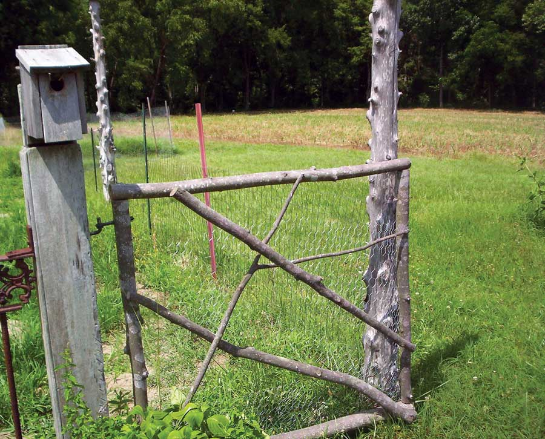

There is no end to the projects to be done on a small farm. Along our driveway, poplar trees often need thinning out. I decided they were perfect for a garden gate at my vegetable garden. I cut down two trees, 12 inches in circumference, and cleaned off the branches.
From the branches, I cut two poles of equal length for the garden gate side rails. Next, I cut the top and bottom rails, with their lengths determined by the width of the gate opening, allowing room for hardware. I attached the top and bottom rails to the side rails using L brackets to form the frame for the garden gate.
I laid some of the leftover lengths of interesting branches across the frame and cut them to create a diagonal design on the gate. I screwed these together with deck screws. The crosspieces provided stability.
Next, I cut chicken wire a little larger than the frame and folded it to fit. Then, using small electrical staples, I tacked the chicken wire around the frame and to the crosspieces.
Using a lag screw hinge-and-eye set, I mounted my gate to the post.
|
 LORI DZIERZEK You can make this garden gate to protect your garden from dogs and small children. |
|
|